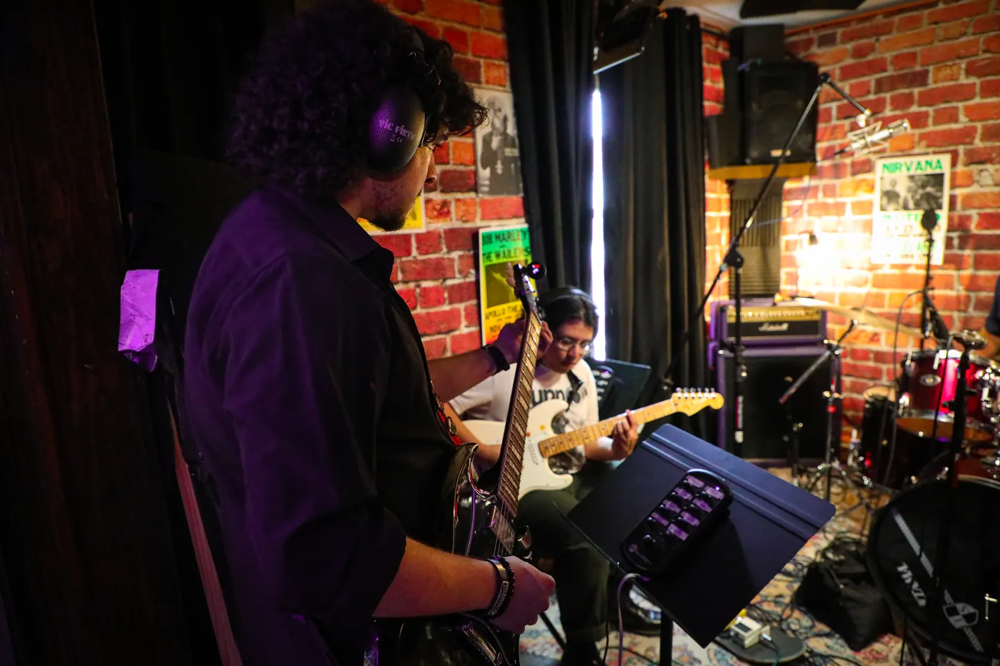
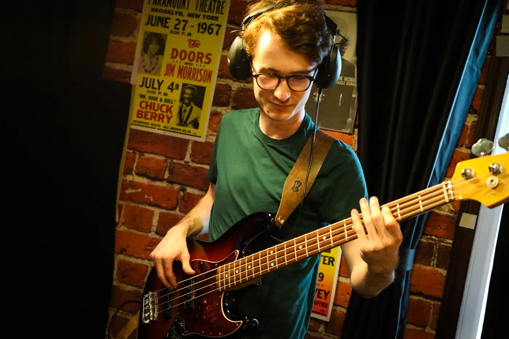

Our mission
We're all about lifting up New Jersey's homegrown talent; musicians and engineers alike.
We're here to give you the chance to create original music, meet other artists and industry pros, and boost your skills and knowledge. And the best part? We make sure you can do it all without financial strain.
What we offer
Recording and multi-media services
Musicians are welcome to record projects of any size without breaking the bank, and while retaining all rights to their music. Plus, you get access to our on-site photo and video studio to make awesome promo materials for marketing your music, building your brand, or designing your merch.
Training and mentoring
Aspiring audio engineers can get hands-on experience in our studio, Carriage City, learning about recording, mixing and mastering, and live sound engineering. Gain real-world, hands-on experience and training for today's audio-visual needs, like podcasts, livestreams, video editing, and Dolby's spatial audio.
DIY performance venue
In our new studio, Carriage City, our entire community is welcome to participate and attend our all-ages music concerts, cultural and community-based events, yoga and music classes, masterclasses, and workshops held year-round. The space is not only a recording studio, it's a home for our NJ music community to gather together.
Through these experiences, aspiring artists and recording engineers will be able to accumulate a portfolio of work that they can take with them as they pursue higher-education institutions or use for directly launching their careers in the industry.
Our story
IA started the way our founder EJ initiated his other business: completely backwards! But that business is celebrating its 20th anniversary this year, so who can judge?
IA was created with a "ready, fire, aim" mentality. We saw a huge need in the music community. Bands were struggling to find places to record, couldn't afford studio time, and weren't getting the personal care their projects deserved. Engineers were also having to choose between going to school for an audio engineering degree, which is also costly, or trying to learn on their own.
Through a general love and curiosity about the mystifying world of audio engineering, EJ amassed a collection of recording equipment comparable to many major studios and started offering to record local bands for next to nothing.
After the pandemic, the struggles in the music community became even more apparent. It seemed like an organization like IA could make a significant impact on many individuals. So, ready, fire, aim. EJ gathered a small team and got to work immediately.

If we had to choose between hunting down high-profile board members or doing the real work, we'd choose the real work every day.
IA is undoubtedly a New Jersey group. We are no frills. And just so you know, when someone comes into the studio with an egg, cheese, and ham sandwich, we call it "pork roll." If you call it Taylor Ham, you might find your session cut short!
All kidding aside, IA is a gritty, DIY operation aimed at building a space of acceptance, creativity, education, and, most of all, opportunity for those who want it and are willing to put the time in. That's New Jersey to us, and that's punk. If you want to help, cool. If not, we're moving ahead anyway.
Where we're heading
IA is in motion to open its official home, Carriage City, which will house our recording studio and double as a performance venue and community space for cultural, art, yoga, and music events. We are partnering with Dolby Atmos and have invested in a spatial audio system so that we can provide these mixes for artists and also provide career-based training and experience for aspiring engineers, as New Jersey expands its involvement in the television and film industry. We also have our YouTube broadcast, Rainy Night Records, which we created to share music and stories from original New Jersey bands.
We hope our work gives artists a voice and a home. We aspire to provide resources to everyone who interacts with us that say, "You belong here, you are welcome as you are." It's something we all want to feel, especially those bold enough to share their most intimate and personal thoughts and dare to step outside traditional social constructs like school, higher education, and stable, reliable jobs.
We hope that the work we do provides a foundation for our artists and engineers to follow their dreams as far as they'd like to go. Whether it's performing at a major music festival, cultivating a small local following, or working at a major recording studio, we just want to help each individual we come across find a path and a community that supports them, and know that they belong here.